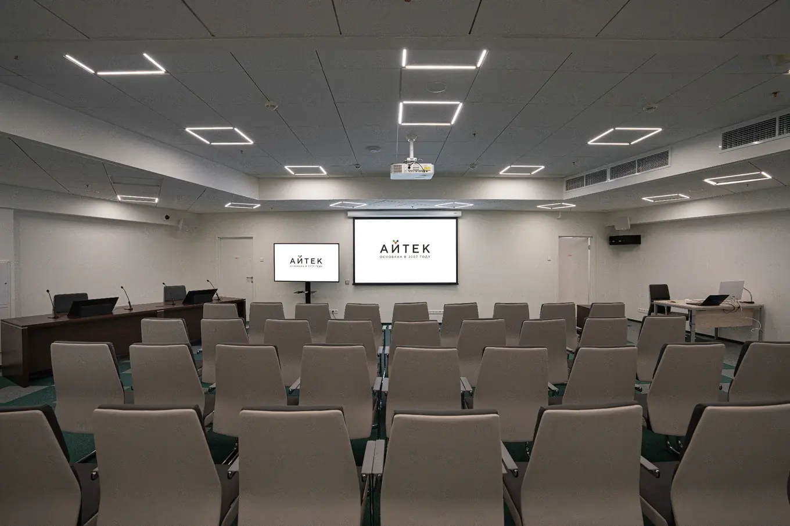

Федеральный исследовательский центр
Апатиты · 60 рабочих дней
Комплексное оснащение конференц-зала в городе Москва

Стоимость и срок указаны для этого объекта. Смета нового проекта зависит от помещения, комплектации и состава работ.
Перед ГК Айтек была поставлена задача - создать конференц-зал, соответствующий современным требованиям, предъявляемым к помещениям такого рода. В нём должны проводиться презентации, консилиумы врачей, встречи с представителями прессы. Зал должен иметь трибуну для выступлений, стол президиума, рабочее место ассистента. Состав оборудования должен быть представлен в виде единого комплекса.
Специалистами ГК Айтек был успешно завершён проект по комплексному оснащению объекта современным мультимедийным оборудованием под ключ. В ходе реализации проекта был произведён весь спектр работ — от поставки оборудования и разработки проектной документации до финальной отладки систем. Состав реализованного комплекса: Проектор с мощностью светового потока 6000 люмен Проекционный экран 1.32 х 2.34м с электроприводом Дополнительная дублирующая интерактивная панель 86" Интерактивная трибуна для выступлений спикера Звуковые настенные системы Скрытая многоуровневая коммутация Централизованное управление всем оборудованием с единого пульта
Компания Айтек реализовала проект по оснащению мультимедийным оборудованием конференц-зала в рамках строительства нового медицинского центра компании Гута Клиник. Гута Клиник – одно из ведущих частных медицинских учреждений в Москве. Компания ведёт свою историю с 1998 г. За это время специалисты медицинского центра оказали помощь более чем 150 000 пациентам, в стационаре проведено свыше 8 тыс. операций высокой сложности. В данном проекте силами компании были выполнены все необходимые работы по проектированию, поставке и монтажу оборудования.
После всесторонней проработки вопроса инженерами компании Айтек было принято решение оснастить конференц-зал следующими системами и оборудованием:
Основная система видеоотображения представлена лазерным видеопроектором высокого разрешения стандарта Full HD и моторизованного экрана со сверхтихим мотором. Использование лазера в качестве источника света в проекторе позволяет почти в 10 раз по сравнению с лампой продлить период его работы между заменой светового элемента, а следовательно снижает регулярные расходы на эксплуатацию.
Мобильная система видеоотображения представлена видеопанелью диагональю 70 дюймов, смонтированной на передвижной напольной стойке. На видеопанель можно выводить как изображение дублирующее основной экран, так и отличное от него с другого источника. Видеопанель имеет возможность перемещения по залу.
Система дублирующих мониторов в президиуме необходима для того чтобы члены президиума, сидя спиной к основному экрану, могли видеть изображение, демонстрируемое на нём.
Система матричной коммутации видеосигнала позволяет получить изображение от ноутбука, подключенного на трибуне, ноутбука, подключенного на столе президиума, или стационарного ПК ассистента и предать его на одну или несколько систем видеоотображения в необходимой в данный момент комбинации.
Для удобного подключения ноутбуков на трибуне и столе президиума предусмотрены настольные коммутационные лючки, где под крышкой размещены электрические и интернет-розетки, а также розетки HDMI для подключения ноутбуков.
Система микрофонов представлена 4-мя настольными дискуссионными микрофонами на «гусиной шее», ими оснащено каждое рабочее место стола президиума. Для трибуны и выступлений из зала имеются 2 ручных радиомикрофона.
Система озвучания состоит из 8-ми настенных громкоговорителей, обеспечивающих равномерное звуковое давление на всей площади помещения. В её задачи входит воспроизведение звукового сопровождения демонстрируемых на экране материалов, а также дополнительное усиление речи выступающих.
Для устранения явления «заводки» микрофонов применяется цифровая обработка звукового сигнала с применением алгоритма подавления обратной связи AEC.
В бриф перейдут выбранный проект, тип помещения и бюджет примера. Все параметры можно изменить.